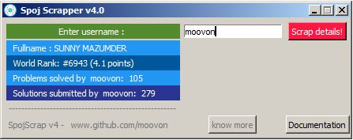

SpojScrapper scraps the details of a username(input), namely:
> Full Name of the User(if provided by the user)
> World Rank and Total Points
> Number of Problems solved
> Number of Solutions submitted
(screenshot GUI)

Other librares have been used like beautifulsoup4, requests.
HOW TO USE:
1)Enter the username in the field provided.
2) Press "Enter" or click "Scrap details"
and you are done!
The Source code for the terminal version :

The Source code for the GUI version :
For installation (other than .exe formats)and other details, read the documentation here :
You can also download the .exe file here :